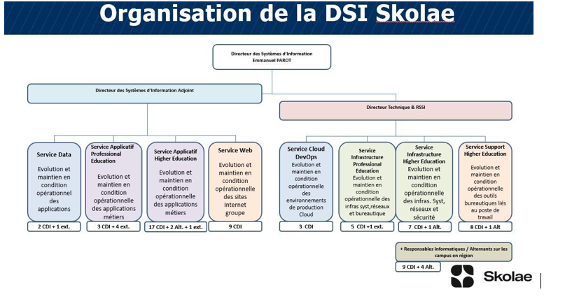

Stage 1ère année - SKOLAE
Stage d'un mois réalisé dans le cadre de ma 1ère année de Bachelor IT à l'EPSI Paris — Découverte du fonctionnement d'une Direction des Systèmes d'Information (DSI).
Objectif du stage
Découvrir le fonctionnement de la DSI et participer aux activités des différents services : Support, Infrastructure, Web et Applicatif.
Présentation de SKOLAE
SKOLAE est un groupe regroupant trois réseaux : GES, EDUCTIVE, ABILWAYS.
Organisation de la DSI

Missions réalisées
- Semaine 1 : Service Support
- Semaine 2 : Service Infrastructure
- Semaine 3 : Service Web
- Semaine 4 : Service Applicatif
Technologies utilisées
- Windows Server
- Active Directory
- Support utilisateur
- Outils de gestion de tickets
- Infrastructure réseau